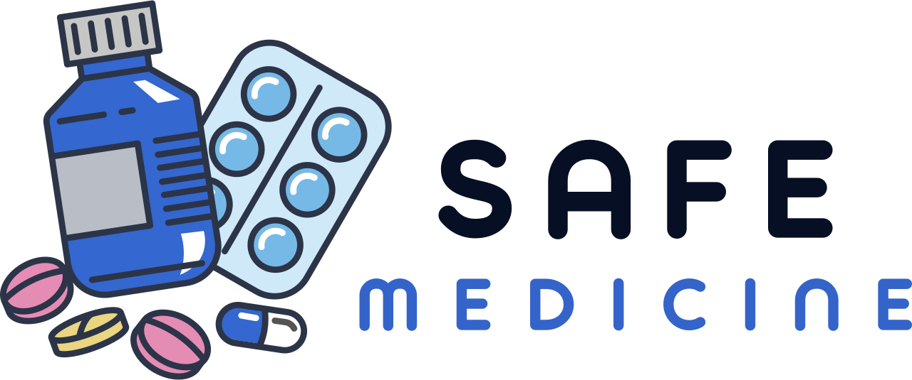

د/أحمد الحارثي
مجمع الملك فيصل بالطائف
فيتامين د
Vitamin D
| الوقت المناسب | بعد تناول الوجبة الرئيسية |
| الوقت الغير مناسب | ليلاً لانه يسبب الارق |
| الجرعة المناسبة | تختلف على حسب الوحدة و مقدار نقص الفيتامين |
| التعارضات مع علاجات اخرى | لايوجد |
| لا ينصح بتناولة في نفس الوقت مع | اي فيتامين آخر |